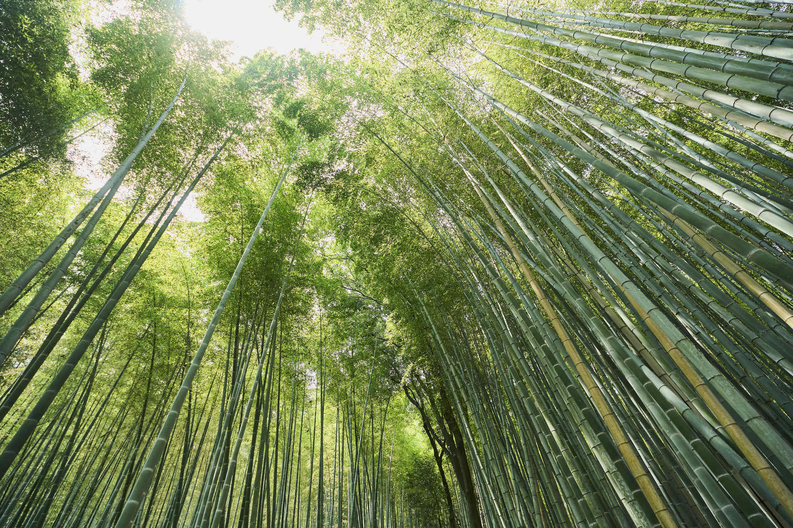
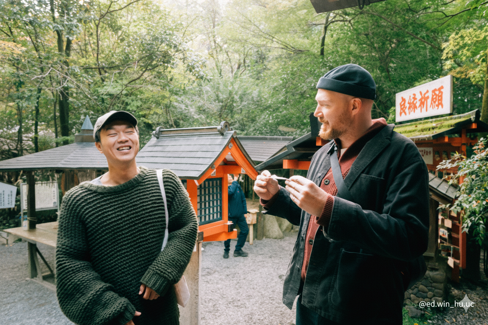

Arashiyama, before the crowds.
Walk the bamboo forest with someone who calls Arashiyama home. Begin with quiet paths, then discover shrines, mountain views and the stories behind Kyoto's western district.

A quieter side of Kyoto
For Ben, Arashiyama isn't just a sightseeing destination. It's home. The early start lets you enjoy the bamboo grove before the busiest hours and discover how local history, Shinto traditions and the landscape fit together.
The route can include the bamboo path, Nonomiya Shrine, viewpoints toward the Hozu River, Togetsukyo Bridge and another attraction agreed for your day. Stops depend on opening times, conditions and your pace.

Questions before you visit
Why start early?
Arashiyama becomes busy during the day. An early walk offers more breathing room, especially around the bamboo grove.
Where do we meet?
Ben will confirm the exact meeting point with your booking, typically near JR Saga-Arashiyama Station.
Can you take photographs?
Yes. Ben is also a photographer. Ask for portrait or candid photography options when sending your inquiry; photo delivery and editing are agreed separately.
Do I pay to request a date?
No. First send your preferred date and group size. Ben confirms the plan and final price before sending a secure payment link.